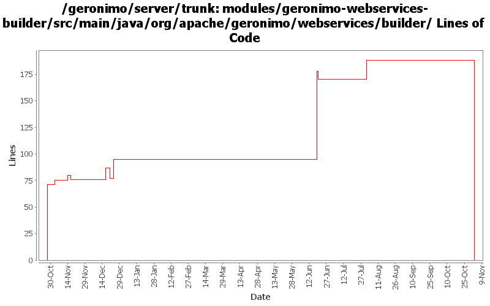

[root]/modules/geronimo-webservices-builder/src/main/java/org/apache/geronimo/webservices/builder

| Author | Changes | Lines of Code | Lines per Change |
|---|---|---|---|
| Totals | 35 (100.0%) | 374 (100.0%) | 10.6 |
| gawor | 11 (31.4%) | 192 (51.3%) | 17.4 |
| djencks | 3 (8.6%) | 78 (20.9%) | 26.0 |
| dain | 4 (11.4%) | 71 (19.0%) | 17.7 |
| jlaskowski | 4 (11.4%) | 24 (6.4%) | 6.0 |
| vamsic007 | 1 (2.9%) | 6 (1.6%) | 6.0 |
| rickmcguire | 2 (5.7%) | 3 (0.8%) | 1.5 |
| prasad | 6 (17.1%) | 0 (0.0%) | 0.0 |
| kevan | 4 (11.4%) | 0 (0.0%) | 0.0 |
GERONIMO-3565. Modules distributed amongst framework/modules and plugins
0 lines of code changed in 6 files:
let's not confuse the user
2 lines of code changed in 2 files:
check for jax-ws services in j2ee webservices.xml descriptor
21 lines of code changed in 4 files:
GERONIMO-3246 Cleanup exception handling so stack traces for first failures are not discarded.
3 lines of code changed in 2 files:
handle service location properly
14 lines of code changed in 2 files:
handle jaxrpc web services in javaee webservices.xml file
155 lines of code changed in 3 files:
GERONIMO-2668 fix errors in previous two fixes, add tests, and this time actually verify that daytrader deploys now
21 lines of code changed in 1 file:
GERONIMO-2668 fix errors in previous fix
45 lines of code changed in 1 file:
GERONIMO-2668 help the axis deployer adjust to presence of other webservice deployers
12 lines of code changed in 1 file:
GERONIMO-2537 Update the src headers in server/trunk/modules to be compliant with the new ASF src header and copyright policy (http://www.apache.org/legal/src-headers.html). I also did some cleanup of the src headers and tried to make them all a consistent format
0 lines of code changed in 4 files:
GERONIMO-1580 Better error message for missing WSDL file for EJB web service
6 lines of code changed in 1 file:
Partial fix for GERONIMO-2537 All Geronimo source files must be brought in line with the new ASF source header and copyright notice policy
The modules directory is supposed to be migrated. There're some issues with some files, but they'll be handled manually
24 lines of code changed in 4 files:
GERONIMO-2528 Move generic webservice specifc code to a new geronimo-webservice-build module
71 lines of code changed in 4 files: